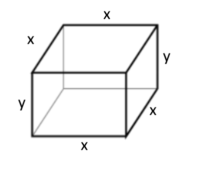

Applied Optimization
Why We Care
While our applications here will be mostly geometric, it will outline the idea of how we use optimization in practice. It is pretty tough to do so in the field, and will be VERY context-dependent. **But** here we can do some problems that use a common enough context to help us wrap our head around optimizing GIVEN CONSTRAINTS.
Some people jokingly call this "barnyard calculus", which is funny and somewhat derogatory - but the sadder truth is that problems that are more relevant are very very challenging to get into, without it taking up all of our precious time here.
For those of us going onto multivariate, you will get to put this to more complicated and relevant use.
What we'll learn / Objectives
- How to use calculus paired with geometry to solve problems
- How to optimize a function given a constraint
What you'll need to remember
- First and Second Derivative Tests
- That you will need at least 2 equations per problem. One will be the constraint, or what limits you, and the other will be the **function you are trying to optimize!**
The actual idea
Reading Assignment: Active Calculus
Pro Tips
Get Your Hands Dirty
Exercise 6 worked out (note, there is an error in the answer key as of 2022):
A rectangular box with a square bottom and closed top is to be made from 2 mateirals. The material for the side costs $1.50 per square foot and the material for the top costs $3.00 per square foot. If you are willing to spend $15 on the box, what is the largest volume it can contain? Justify your answer completely using Calculus.
Let's notice that we are optimizing the Volume function and that our Constraint is the $15 on total cost. So we are after these two equations, and we'll use the constraint to reduce the number of variables in the function we want to maximize.
Sketch
Always sketch it out, even if its not pretty. Note: Square bottom, closed top. Sometimes the top is off!

Constraint
We know the sides, which there are 4, cost $1.50 per square foot. The area of each side comes from our sketch of \( A_s=x*y \). Top and Bottom? Those cost $3 and have area \( A_{tb} = x^2 \). So we can build a cost function from the cost of the top (price/sqft times area) plus the cost of the sides (remember there's 4 sides and 2 on the top and bottom) \( C = C_{tb} + C_s = (2)(3)(x^2) + (4)(1.5)(xy) = 6x^2 + 6xy \)
We know this has a fixed amount of $15. So we can solve for y (it is the easier of the two variables to solve for). \[ \begin{gather} 15 = 6x^2 + 6xy \\ y = \frac{15-6x^2}{6x} \end{gather} \] We use the constraint to reduce the variables in the equation we want to optimize.
Set up function to optimize
So we want to optimize the *Volume*. Volume of this box would be \[V = x*x*y = x^2y \].
Notice how it has two variables and we only know how to find maxes of single-variable functions. HERE is where the CONSTRAINT comes into play.
Let's get rid of the y, with the equation for y that we have in terms of x.
\[V = x^2y = x^2 \bigg( \frac{15-6x^2}{6x} \bigg) = \frac{15x^2}{6x}-\frac{6x^4}{6x} = \frac{5x}{2}-x^3\]
Now I have a function, \( V(x) = \frac{5x}{2}-x^3 \) that I can apply the derivative tests, and find the maximum for. I am going to skip this since we do have done it a lot in previous sections.
In this case, it should be at the x-value = 0.913 which produces a volume of 1.521 cubic feet.